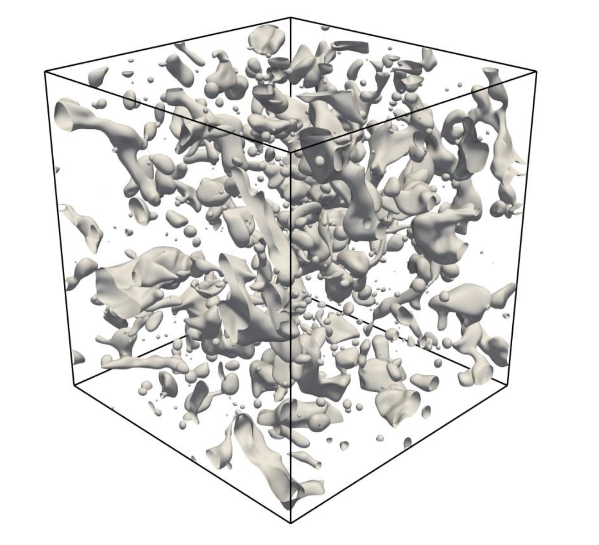

Select a configuration
Browse regimes and review Reynolds number, Weber number, fluid-property ratios, and resolution.
A high-fidelity, multi-regime database for understanding the interaction of turbulence, deformable interfaces, and fluid properties.

Explore canonical configurations, compare physical parameters, and find a starting point for your next study.
No collections match your search. Try “turbulence”, “channel”, or “HDF5”.
Three-dimensional fields and case-specific metadata provide a common foundation for reproducible multiphase flow research.
Request data access ↗Raw data hosting is pending. Contact the research team for availability; this portal currently provides catalog metadata.
Browse regimes and review Reynolds number, Weber number, fluid-property ratios, and resolution.
Open a collection to inspect the manuscript’s parameter tables. Download the catalog as CSV for your workflow.
Simulation datasets are described as velocity components, pressure, and phase indicator. Confirm file keys, units, and snapshot layout with the team before analysis.
Resolve turbulent motion and deformable interfaces to support model development and systematic comparison.
The accurate conservative diffuse-interface (ACDI) formulation couples phase-field transport to incompressible flow with consistent mass and momentum transport.
A hybrid conservative level-set approach uses a GPU-accelerated continuous Galerkin spectral element method with spectrally vanishing viscosity stabilization.
MFlowDB brings together data across canonical two-phase configurations for interfacial geometry, phase-conditioned statistics, subgrid modeling, and data-driven learning.
Georgia Institute of Technology / Argonne National Laboratory / NVIDIA
Anirban Bhattacharjee et al.
MFlowDB: A high-fidelity multi-regime open database for multiphase flows.
Manuscript supplied by the research team. Publication details and DOI are not yet provided.